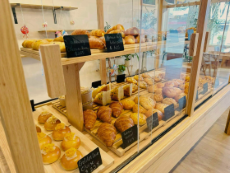
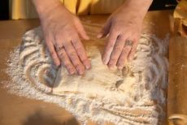

A Padaria Farina nasceu da paixão por pães artesanais e do desejo de trazer o sabor doforno à lenha para o coração da cidade. Aqui, cada pão é feito com carinho, ingredientesselecionados e aquele toque especial que lembra casa de vó.
Nosso cardápio inclui uma variedade de pães fresquinhos todos os dias: francês, integral,de queijo, italiano e muito mais. Também oferecemos bolos caseiros, doces tradicionais ecafés especiais.
Venha nos visitar e sinta o aroma que conquista o bairro todas as manhãs!
A Farina foi fundada por Dona Ana em 2002, com o objetivo de oferecer produtos frescos eatendimento acolhedor. Desde então, mantemos a tradição da panificação artesanal, respeitandoreceitas clássicas e sempre inovando com novos sabores.
Nossa equipe é formada por padeiros experientes, confeiteiras apaixonadas e um atendimentoque faz você se sentir em casa.
Acreditamos que o segredo está nos detalhes — na massa bem sovada, no forno sempre aceso eno sorriso de quem recebe o cliente.